トランスファASSY（4WD） 分解 |
| 1. トランスファ ＆ トランスアクスル セッティングスタッドボルト取りはずし |
| 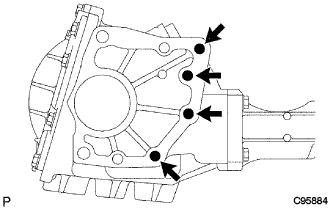 |
ダブルナットを使用してスタッドボルト4本を取りはずす。
| 2. トランスファケース プラグ NO.2取りはずし |
トランスファケースプラグNo.2（フィラープラグ）を取りはずす。
| 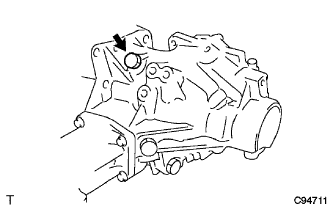 |
プラグNo.2からガスケットを取りはずす。
| 3. トランスファケース プラグ NO.1取りはずし |
トランスファケースプラグNo.1（フィラープラグ）を取りはずす。
| 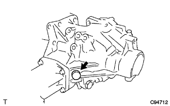 |
プラグNo.1からガスケットを取りはずす。
| 4. トランスファドレン プラグ取りはずし |
トランスファドレーンプラグを取りはずす。
| 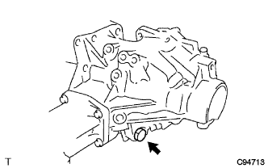 |
トランスファドレーンプラグからガスケットを取りはずす。
| 5. トランスファ ケース ブリーザプラグ取りはずし |
タガネおよびハンマーを使用して、ブリーザプラグを少し浮かせる。
| 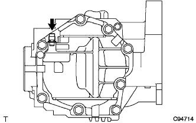 |
マイナスドライバーで軽くこじて、ブリーザプラグを取りはずす。
| 6. トランスファ ケース カバー NO.1取りはずし |
| 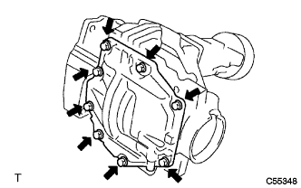 |
ボルト８本を取りはずす。
| 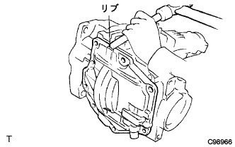 |
ブラスバーおよびハンマーを使用して、ケースカバーをケースから取りはずす。
| 7. トランスファダイナミック ダンパ取りはずし |
| 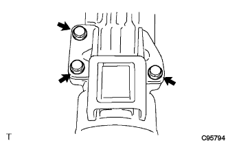 |
ボルト３本をはずし、ダイナミックダンパをエクステンションハウジングから取りはずす。
| 8. トランスファ ケース ストレートピン取りはずし |
トランスファケースストレートピン４個を取りはずす。
| 9. トランスファASSY固定 |
トランスファASSYをオーバーホールアタッチメントに固定する。
| 10. トランスファエクステンションハウジングダスト デフレクタ取りはずし |
| 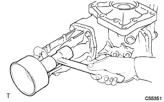 |
プラスチックハンマーを使用して、ダストデフレクタをエクステンションハウジングから取りはずす。
| 11. トランスファ エクステンション ハウジング オイルシール取りはずし |
| 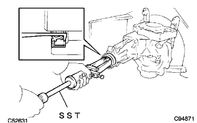 |
SSTを使用して、オイルシールをエクステンションハウジングから取りはずす。
| 12. トランスファ エクステンション ハウジング取りはずし |
| 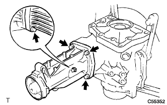 |
ボルト４本を取りはずす。
| 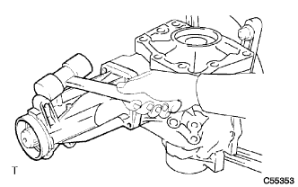 |
プラスチックハンマーを使用して、エクステンションハウジングをケースから取りはずす。
| 13. プレロード点検 |
SSTおよびトルクレンチを使用して、バックラッシュの範囲内で起動トルク（ドリブンピニオンプレロード）を点検する。
| 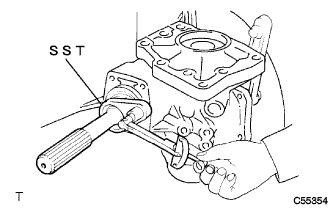 |
SSTおよびトルクレンチを使用して、ドリブンピニオンとリングギヤ歯面を当てた状態で起動トルク（総合プレロード）を点検する。
| 14. バックラッシュ点検 |
| 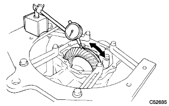 |
ダイヤルゲージをリングギヤの歯面に直角に当て、ドリブンピニオンを固定し、リングギヤを動かして点検する。
| 15. リングギヤとドリブンピニオンの歯当たり点検 |
| 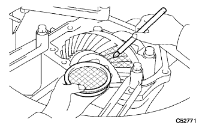 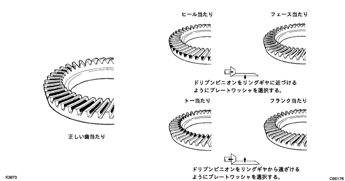 |
リングギヤの歯面両側に光明丹を薄く均一に塗布し、リングギヤを数回、正回転、逆回転させる。
| 16. トランスファ ケース オイルシール取りはずし |
| 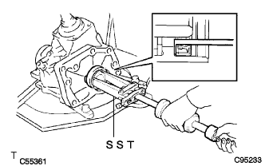 |
SSTを使用して、オイルシールをケースから取りはずす。
| 17. トランスファ ケース オイルシール RH取りはずし |
| 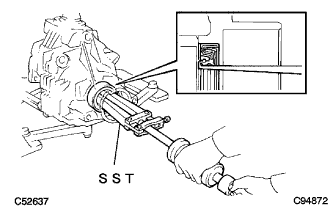 |
SSTを使用して、オイルシールをケースから取りはずす。
| 18. トランスファ アウトプットシャフト スペーサ NO.1取りはずし |
| 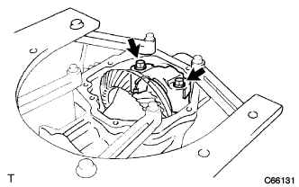 |
ボルト２本をはずし、ベアリングキャップを取りはずす。
| 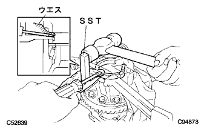 |
SST、マイナスドライバーおよびハンマーを使用して、スペーサをケースから取りはずす。
| 19. トランスファリングギヤマウンティングケース ワッシャ NO.2取りはずし |
| 20. トランスファ リングギヤ マウンティングケース取りはずし |
| 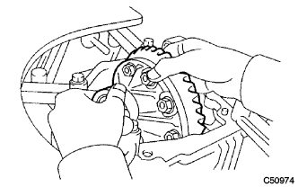 |
リングギヤマウンティングケースを、リングギヤおよびリングギヤマウンティングケースベアリングと一体でケースから取りはずす。
| 21. ドリブンピニオン取りはずし |
| 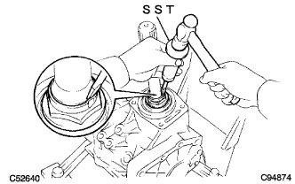 |
SSTおよびハンマーを使用して、トランスファギヤナットのかしめを解く。
| 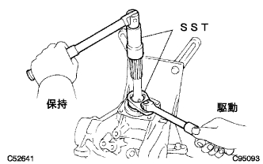 |
SSTを使用して、トランスファギヤナットを取りはずす。
| 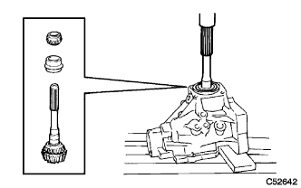 |
プレスを使用して、ドリブンピニオン、トランスファドリブンピニオンベアリングRR（インナーレース）およびトランスファピニオンベアリングスペーサを取りはずす。
| 22. トランスファ ドリブンピニオン ベアリング RR取りはずし |
| 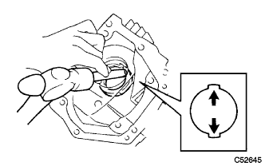 |
ブラスバーおよびハンマーを使用して、ドリブンピニオンベアリングRR（アウターレース）の2箇所を軽くたたいてケースから取りはずす。
| 23. トランスファ ドリブンピニオン ベアリング FR取りはずし |
| 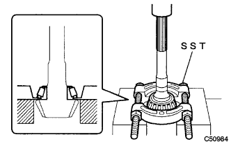 |
SSTおよびプレスを使用して、ドリブンピニオンベアリングFR（インナーレース）をドリブンピニオンから取りはずす。
| 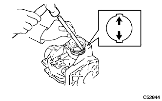 |
ブラスバーおよびハンマーを使用して、ドリブンピニオンベアリングFR（アウターレース）を軽くたたいてケースから取りはずす。
| 24. トランスファ アウトプットシャフトワッシャ取りはずし |
| 25. リングギヤマウンティングケース ベアリング取りはずし |
リングギヤマウンティングケースベアリングRH（アウターレース）をリングギヤマウンティングケースASSYから取りはずす。
| 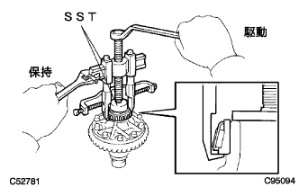 |
SSTを使用して、リングギヤマウンティングケースベアリングRH（インナーレース）をリングギヤマウンティングケースASSYから取りはずす。
| 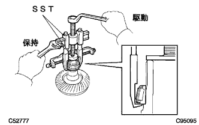 |
SSTを使用して、リングギヤマウンティングケースベアリングLH（インナーレース）をリングギヤマウンティングケースASSYから取りはずす。
| 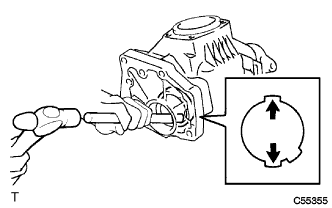 |
ブラスバーおよびハンマーを使用して、リングギヤマウンティングケースベアリングLH（アウターレース）の2箇所を軽くたたいてケースから取りはずす。
リングギヤマウンティングケースワッシャを取りはずす。
| 26. リングギヤ振れ点検 |
リングギヤマウンティングケースASSYをVブロックの上にのせる。
 |
ダイヤルゲージを使用して、リングギヤの振れを点検する。
| 27. リングギヤ取りはずし |
リングギヤマウンティングケースASSYをアルミ板を介して、バイスに固定する。
リングギヤマウンティングケースとリングギヤに合わせマークを付ける。
| 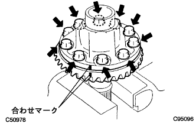 |
ボルト10本を取りはずす。
| 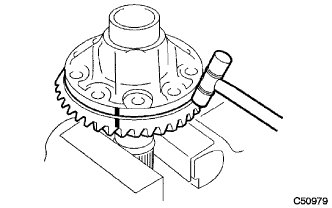 |
プラスチックハンマーを使用して、リングギヤの外周を軽くたたいて取りはずす。
| 28. トランスファ リングギヤ マウンティングケース振れ点検 |
リングギヤマウンティングケースをVブロックの上にのせる。
| 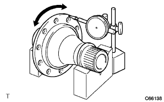 |
ダイヤルゲージを使用して、リングギヤマウンティングケースの振れを点検する。